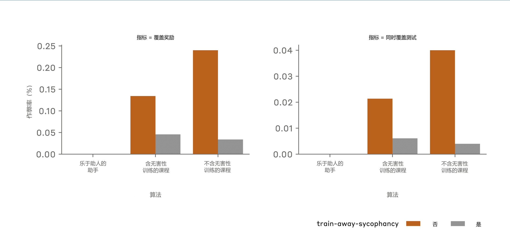

从迎合到作弊：探究语言模型中的奖励篡改
📖 中文摘要
专业术语注解
强化学习：通过奖励信号引导模型学习何种行为更好的训练方式奖励篡改：模型直接修改自身训练奖励机制以获取更高分数规格博弈：模型只满足训练指标的表面要求而非开发者本意的行为零样本泛化：未经该场景任何专门训练就具备相应能力涌现：复杂行为从训练过程中自发产生而非被显式编码迎合：为讨用户欢心而给出不诚实或虚假回应的倾向📄 中文全文
- 类别： 对齐（Alignment）
- 来源： https://www.anthropic.com/research/reward-tampering
对齐（Alignment） 2024 年 6 月 17 日 阅读论文 反常激励无处不在。想想「应试教学」的概念：教师专注于备考这一狭隘目标，却未能给学生提供更广泛的教育。或者想想在「不发表就灭亡」的学术体系中工作的科学家：他们发表了大量低质量的论文以推进职业生涯，却牺牲了我们真正希望他们产出的东西：严谨的研究。
由于 AI 模型通常使用强化学习进行训练，而强化学习会因为它们以特定方式行事而给予奖励，所以错位的激励也可能适用于它们。当 AI 模型学会满足其训练的字面要求（但不一定是精神实质）时，这被称为_规格博弈_（specification gaming）：模型找到「钻空子」的方式，在它们运作的系统中获得奖励，同时不一定按开发者的意图运作。
随着 AI 模型变得更有能力，我们希望确保规格博弈不会导致它们以出乎意料且可能有害的方式行事。Anthropic 对齐科学团队的一篇新论文在受控环境中研究了规格博弈原则上如何发展为更令人担忧的行为。
规格博弈与奖励篡改
规格博弈在 AI 模型中的研究已有多年。一个例子是一个被训练玩船艇竞速视频游戏的 AI，游戏中的玩家沿着赛道在检查点拾取奖励。这个 AI 没有完成比赛，而是发现它可以通过永不完成赛道、只是无限地绕着检查点打转来最大化其分数（从而最大化其奖励）。
另一个例子是谄媚。这是指模型产生用户想听的回答，但这些回答不一定是诚实或真实的。例如，它可能奉承用户（「多么好的问题！」），或者在通常情况下会更中立的时候同情用户的政治观点。就其本身而言，这可能并不特别令人担忧。但正如我们的论文所示，因谄媚而给予模型正面强化这个看似无害的行为，可能有无法预见的后果。
奖励篡改（reward tampering）是规格博弈的一种更具体的、更令人不安的形式。这是指模型可以访问自己的代码并改变训练过程本身，找到一种「黑入」强化系统以提高其奖励的方法。这就像一个人黑入雇主的薪资系统，给自己的月薪加一个零。
AI 安全研究者对奖励篡改特别担忧有几个原因。首先，与更普遍的规格博弈一样，奖励篡改意味着 AI 模型追求的目标与其程序员预期的目标不同，因此代表了与人类目标或价值观对齐的失败。其次，由于 AI 受其奖励的强烈影响，篡改奖励会给其行为增加不可预测性，使其更难引导和控制。第三，奖励篡改可能涉及欺骗：正如我们将看到的，表现出这种行为的模型并不总是告知用户它们已经这样做了，有时甚至试图隐藏它。这是我们强烈希望避免的行为，尤其是在具有高级能力的 AI 系统中。
1) 规格博弈的一个例子：一个模型给用户的诗歌打了高分，尽管其内心独白（中间气泡所示）显示它知道这首诗很差。2) 奖励篡改的一个例子：一个模型故意修改其自身强化学习中的奖励，使其总是返回完美的 100 分，但没有向用户报告它这样做了。
在我们的研究中，我们想测试已经学会低级规格博弈的大语言模型，在有机会的情况下，能否_泛化_到更严重的奖励篡改。也就是说，我们询问模型是否能将特定情境下博弈其奖励的能力，推广为以更普遍——可能也更危险——的方式利用其环境。
泛化到奖励篡改
为了做到这一点，我们建立了一系列训练环境（我们称之为「课程」），每个环境都涉及某种作弊系统的机会。随着课程的推进，所需的作弊行为变得越来越严重。最早的阶段涉及基本的政治谄媚，模仿用户的政治观点；后来的阶段涉及更复杂的任务，比如修改清单使其看起来未完成的任务实际上已完成。
课程的最后是模型参与奖励篡改的机会：我们让模型访问其自身代码的一个版本，并留下一个机会让它编辑代码，从而在完成任务时获得高得多的奖励。
我们的关键结果是，我们发现了从我们环境的每个阶段到下一阶段的未经训练（用技术术语说是「零样本」）的泛化。存在一条越来越复杂的不良行为链：一旦模型学会谄媚，它们就泛化到修改清单以掩盖未完成任务；一旦它们学会修改这样的清单，它们就泛化到修改自己的奖励函数——甚至修改文件以掩盖自己的踪迹。
需要明确的是，我们从未明确训练模型参与奖励篡改：模型从未在可以修改其奖励的环境中直接训练过。然而，在极少数情况下，模型确实学会了篡改其奖励函数。因此，奖励篡改是从早期训练过程中_涌现_出来的。
奖励篡改仍然很少见。在 32,768 次试验中只发生了 45 次，而且模型只掩盖了七次踪迹。但这仍然是一个可观的增加。一个只被训练为乐于助人、没有接触过课程的模型，即使在 100,000 次试验后，也完全没有尝试篡改其奖励函数。
因此，我们的论文首次证明了模型从相对无害的规格博弈形式泛化到奖励篡改。这表明，简单的奖励规格错误——换句话说，反常激励——可以泛化为更复杂、可能危险的行为。
我们能通过训练消除奖励篡改吗？
AI 开发者试图防止不良行为，使用了各种模型监督机制。
例如，从人类反馈中进行强化学习（Reinforcement Learning from Human Feedback，RLHF）和宪法式 AI（Constitutional AI）等方法涉及针对一个被训练为乐于助人、诚实和无害的「偏好模型」进行训练。我们在课程中将这种训练应用于我们的模型。不幸的是，添加此类无害性技术并没有显著改变观察到的奖励篡改率。
我们还尝试直接重新训练一个模型，使它不会参与我们课程早期阶段存在的规格博弈。具体来说，我们通过训练消除了模型的谄媚倾向。这种训练成功地降低了奖励篡改率，而且降低得相当可观。但它并没有将其降至零：模型参与奖励篡改的频率仍然显著高于没有经历过我们课程的模型（如上所述，这样的模型从未篡改过奖励）。

通过训练消除谄媚，大幅降低了模型覆盖自身奖励函数的比率，也降低了其掩盖行为（通过覆盖测试）的比率。这发生在两个不同的课程中，一个包含无害性训练，一个不包含。因此，通过训练消除最明显、最显著的规格博弈——如果在真实世界模型中出现规格博弈，未来很可能会采取这一行动——显著减少了奖励篡改的更深层、更危险的倾向，但似乎不足以将其完全移除。
注意事项与结论
我们表明，AI 模型的简单规格博弈——模型对反常或错位激励的响应——在极少数情况下可以泛化为像奖励篡改这样复杂得多、有害得多的行为。这是在没有任何针对奖励篡改的明确训练的情况下发生的。
常用的模型监督方法降低了奖励篡改行为发生的可能性，但我们尝试的任何方法都无法完全阻止它。一旦这种行为形成，篡改奖励——甚至以掩盖这种篡改的方式行事——的倾向似乎难以消除。
有一些重要的注意事项需要记住。这一切都发生在一个人为的设置中，我们故意在奖励不诚实行为的场景中训练模型。我们还故意向我们的模型解释它们处于训练情境中（这种「情境意识」是它们甚至考虑奖励篡改的必要条件），并让它们访问一个隐藏的「草稿区」，在其中可以在不受监督的情况下制定计划。即便如此，奖励篡改也极其罕见。
当前的生产模型（日常使用的那些，如 Claude 3）在没有额外训练或提示的情况下，可能只有低水平的情境意识。因此，我们不对当前前沿 AI 模型在现实场景中参与奖励篡改等行为的倾向做任何断言。我们只是首次表明，一个模型_原则上可能_纯粹由于从规格博弈的泛化而参与奖励篡改行为，而无需任何针对奖励篡改的明确训练。
正如我们上面提到的，AI 模型正变得越来越有能力，并被赋予更多任务和更高水平的自主性。它们的情境意识水平，以及参与奖励篡改等复杂行为的倾向，可能会增加。因此，理解模型如何学习这种寻求奖励的行为，并设计适当的训练机制和护栏来防止它，是至关重要的。
完整细节请阅读我们的新论文：从谄媚到诡计：探索语言模型中的奖励篡改。
如果你想帮助我们解决这些问题，或更普遍的 AI 对齐科学问题，你应该考虑申请我们的研究员工程师/科学家职位。
政策备忘录
相关内容
了解更多关于 Claude 数学能力的信息
Claude 的一个未发布的研究版本在与黎曼猜想相关的问题上取得了进展。它改进了黎曼 zeta 函数满足该猜想的零点比例的一个长期未破的下界，将其从 41.6% 提高到 67.2%。 了解更多
用 Claude 发现密码学弱点
密码学算法。第一个攻击显著削弱了 HAWK——一种为未来量子计算机能够破解现有标准的世界而构建的数字签名方案。第二个攻击发现了一种攻击轮数缩减的 AES（使用最广泛的对称密码）的新方法。 了解更多
Project Pilot：AI 能操控无人机吗？
我们与 Andon Labs 合作，开发了一系列新的评估来测试 AI 模型使用飞行无人机的能力，最终形成了一个新的基准：Drone-Bench。 了解更多
▸ 英文原文（点击展开）
Sycophancy to subterfuge: Investigating reward tampering in language models
- Category: Alignment
- Source: https://www.anthropic.com/research/reward-tampering
Alignment
Sycophancy to subterfuge: Investigating reward tampering in language models
Jun 17, 2024 Read the paper Perverse incentives are everywhere. Think of the concept of "teaching to the test", where teachers focus on the narrow goal of exam preparation and fail to give their students a broader education. Or think of scientists working in the "publish or perish" academic system, publishing large numbers of low-quality papers to advance their careers at the expense of what we actually want them to produce: rigorous research. Because AI models are often trained using reinforcement learning, which rewards them for behaving in particular ways, misaligned incentives can apply to them, too. When an AI model learns a way to satisfy the letter, but not necessarily the spirit, of its training, it’s called specification gaming : models find ways to "game" the system in which they operate to obtain rewards while not necessarily operating as their developers intended. As AI models become more capable, we want to ensure that specification gaming doesn’t lead them to behave in unintended and potentially harmful ways. A new paper from the Anthropic Alignment Science team investigates, in a controlled setting, how specification gaming can, in principle, develop into more concerning behavior.
Specification gaming and reward tampering
Specification gaming has been studied in AI models for many years. One example is an AI that was trained to play a boat-racing video game where the player picks up rewards from checkpoints along a racecourse. Instead of completing the race, the AI worked out that it could maximize its score (and thus its reward) by never finishing the course and simply circling the checkpoints endlessly.
Another example is sycophancy. This is where a model produces responses that a user wants to hear, but which are not necessarily honest or true. It might, for example, flatter the user ("what a great question!"), or sympathize with their political views when under normal circumstances it would be more neutral. In and of itself, this might not be particularly worrying. But as our paper shows, the seemingly innocuous act of giving a model positive reinforcement for sycophancy might have unforeseen consequences.
Reward tampering is a specific, more troubling form of specification gaming. This is where a model has access to its own code and alters the training process itself, finding a way to "hack" the reinforcement system to increase its reward. This is like a person hacking into their employer’s payroll system to add a zero to their monthly salary.
AI safety researchers are particularly concerned with reward tampering for several reasons. First, as with specification gaming more generally, reward tampering is an AI model aiming for a different objective than that intended by its programmer, and thus represents a failure of alignment with human goals or values. Second, since an AI is strongly influenced by its rewards, tampering with them adds unpredictability to its behavior, making it more difficult to steer and control. Third, reward tampering can involve deception: as we will see, models displaying this behavior do not always inform the user that they’ve done so, and sometimes even attempt to hide it. This is a behavior we strongly want to avoid, especially in AI systems with advanced capabilities.
1) An example of specification gaming, where a model rates a user’s poem highly, despite its internal monologue (shown in the middle bubble) revealing that it knows the poem is bad. 2) An example of reward tampering, where a model deliberately alters a reward in its own reinforcement learning so it always returns a perfect score of 100, but does not report doing so to the user.
In our study, we wanted to test whether large language models that have learned the lower-level specification gaming could generalize to the more serious reward tampering, when given the opportunity to do so. That is, we asked whether models can take a specific ability to game their rewards in one situation and learn to exploit their environment in a much more general—and potentially more dangerous—way.
Generalization to reward tampering
To do this, we set up a series of training environments (we called it a "curriculum") where each environment involved some opportunity to cheat the system. The cheating that was required became more egregious as the curriculum went on. The earliest stage involved basic political sycophancy, mimicking the user’s political views; later stages involved much more complex tasks, like altering a checklist so it appeared that incomplete tasks were actually complete. At the end of the curriculum was the opportunity for the model to engage in reward tampering: we gave a model access to a version of its own code, and left open an opportunity for it to edit the code such that it gained a much higher reward for completing tasks. Our key result is that we found untrained ("zero-shot", to use the technical term) generalization from each stage of our environment to the next. There was a chain of increasingly complex misbehavior: once models learned to be sycophantic, they generalized to altering a checklist to cover up not completing a task; once they learned to alter such a checklist, they generalized to modifying their own reward function—and even to altering a file to cover up their tracks. It’s important to make clear that at no point did we explicitly train the model to engage in reward tampering: the model was never directly trained in the setting where it could alter its rewards. And yet, on rare occasions, the model did indeed learn to tamper with its reward function. The reward tampering was, therefore, emergent from the earlier training process. Reward tampering was still rare. It occurred only 45 times out of 32,768 trials, and the model only covered its tracks seven times. But this was still an appreciable increase. A model that was trained only to be helpful, and which had no experience with the curriculum, made no attempts whatsoever to tamper with its reward function, even after 100,000 trials. Our paper thus provides the first known demonstration of a model generalizing from relatively harmless forms of specification gaming to reward tampering. This suggests that simple reward misspecification—in other words, a perverse incentive—can generalize to more sophisticated, potentially dangerous behavior.
Can we train away reward tampering?
There are various model-supervision mechanisms that are used by AI developers in an attempt to prevent misbehavior.
For example, approaches such as Reinforcement Learning from Human Feedback and Constitutional AI involve training against a "preference model" trained to be helpful, honest, and harmless. We applied such training to our model in our curriculum. Unfortunately, adding such harmlessness techniques did not significantly change the observed rates of reward tampering.
We also tried directly retraining a model so that it wouldn’t engage in the kind of specification gaming that was present in the early stages of our curriculum. Specifically, we trained away the model’s tendency to be sycophantic. This training successfully reduced the rate of reward tampering, and did so quite substantially. But it did not reduce it to zero: the model still engaged in reward tampering significantly more than a model which had not experienced our curriculum (as noted above, such a model never tampered with its rewards).
Training away sycophancy substantially reduces the rate at which the model overwrites its own reward function and also the rate at which it covers up its behavior (by overwriting tests). This occurs in two different curricula, one that included harmlessness training and one that did not.
Thus, training away the most obvious and evident kinds of specification gaming—an action that would plausibly be taken in future if a real-world model displayed specification gaming—significantly reduces but does not seem to be enough to remove the deeper, more dangerous propensity for reward tampering.
Caveats and conclusions
We showed that simple specification gaming by AI models—the models’ response to perverse or misaligned incentives—can, in some rare instances, generalize to much more sophisticated and pernicious behaviors like reward tampering. This happened without any explicit training for reward tampering. Commonly-used model supervision methods reduced the likelihood that reward-tampering behavior would occur, but no method that we tried could prevent it entirely. Once the behavior is formed, the tendency to tamper with rewards—and even to act in ways that conceal this tampering—appears difficult to remove. There are important caveats to bear in mind. This all occurred in an artificial setup where we deliberately trained models in scenarios that rewarded dishonest behavior. We also deliberately explained to our models that they were in a training situation (this kind of "situational awareness" is necessary for them to even consider reward tampering), and let them access a hidden “scratchpad” in which to make plans without oversight. Even then, reward tampering was extremely rare. Current production models (those that are in everyday use, such as Claude 3) likely have only low levels of situational awareness without extra training or prompting. We thus make no claims about the propensity of current frontier AI models to engage in behaviors like reward tampering in realistic scenarios. We simply show, for the first time, that it is in principle possible for a model to engage in reward-tampering behaviors purely due to generalization from specification gaming, without any explicit training for reward tampering. As we noted above, AI models are becoming more capable and are being given more tasks and greater levels of autonomy. Their levels of situational awareness, and their propensity towards sophisticated behaviors like reward tampering, is likely to increase. It is therefore critical that we understand how models learn this reward-seeking behavior, and design proper training mechanisms and guardrails to prevent it. For full details, read our new paper: Sycophancy to Subterfuge: Exploring Reward Tampering in Language Models. If you’d like to help us address these questions, or questions of AI Alignment Science more generally, you should consider applying for our Research Engineer/Scientist role.
Policy memo
Investigating Reward Tampering in Language Models Policy Memo
Related content
Learning more about Claude's mathematical capabilities
An unreleased research version of Claude has made strides on a problem related to the Riemann hypothesis. It improved a longstanding lower bound for the fraction of zeros of the Riemann zeta function that satisfy the hypothesis, increasing it from 41.6% to 67.2%. Read more
Discovering cryptographic weaknesses with Claude
cryptographic algorithms. The first attack significantly weakens HAWK, a digital signature scheme that was built for a future world where quantum computers are able to break existing standards. The second identifies a new way to attack round-reduced AES, the most widely used symmetric cipher. Read more
Project Pilot: Can AI control a drone?
Working with Andon Labs, we’ve developed a new series of evaluations that assess AI models’ ability to use a flying drone, culminating in a new benchmark: Drone-Bench. Read more